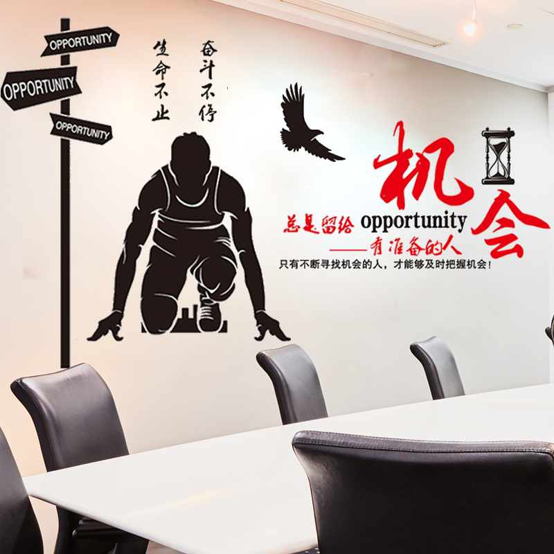

新闻网消息（文/机电工程学院 杨燕华 图/机电工程学院 蔡贤浩 杨燕华）为庆祝2019届毕业生顺利毕业， 增强毕业生对母校的认同感，留下对母校美好的记忆， 2019年6月28日，机电工程学院在官塘校区T3教学楼一楼开展了“匠心筑梦，青春启航”2019届毕业欢乐SONG活动。 新闻网消息（文/机电工程学院 杨燕华 图/机电工程学院 蔡贤浩 杨燕华）为庆祝2019届毕业生顺利毕业， 增强毕业生对母校的认同感，留下对母校美好的记忆，2019年6月28日，机电工程学院在官塘校区T3教学楼一楼开展了“匠心筑梦， 青春启航”2019届毕业欢乐SONG活动。该院院长陈文勇、党总支书记王大红、副院长关意鹏、全体教职员工以及2019届毕业生参加活动。 活动伊始，王大红致辞。他希望毕业生们不忘初心，保持学习的态度，勇猛精进，志愿无倦。谢谢我的青春！ 在现场感恩环节，大家把自发准备的鲜花，献给任课老师和辅导员们，表达出深深的感激之情。 最后，毕业生们还在T3楼前的校道的毕业生班级照片墙前，纷纷拿起手机合影留念。 毕业是一次离别也是一次新的启程，愿所有2019届机电毕业生们岁月生辉，前程似锦。
毕业生演唱歌曲
每天收获小进步，积累起来就是大进步；每天收获小幸福，积攒起来便成大幸福